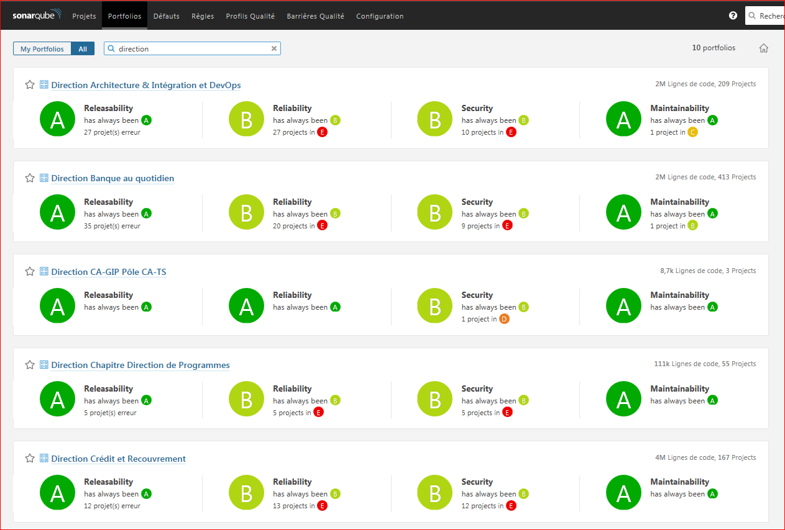

Création autres vues
Cette fonction permet de créer toute une série de vues dans SonarQube :
- portfolio DataStage : crée un portfolio avec tous les composants DataStage répertoriés.
- Portfolios Direction : crée un portfolio pour chaque direction avec tous les composants liés.
